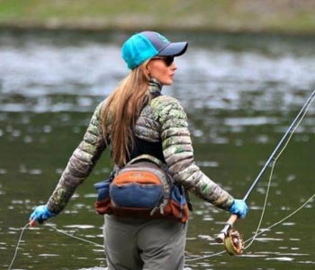
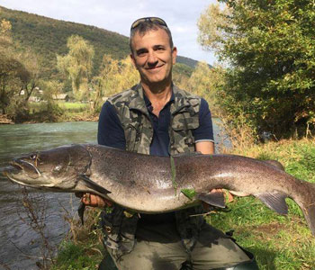
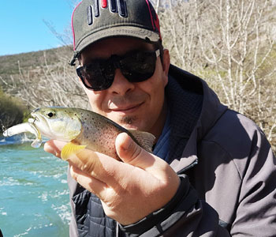

Ribolov na rijeci Krki je moguć uz Dozvolu Uprave.
Od slapa prema mostu ima neke morske ribe.
Od izvora do slapova Skradinski Buk je riječna riba.
Provedite aktivan odmor na rijeci Krki.
Djevojka lovi ribu
Dobar ulov
Ima i male ribe
